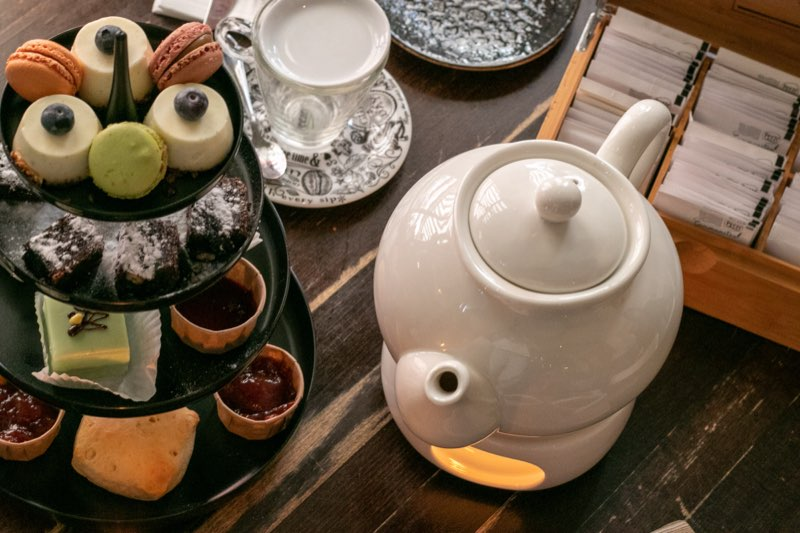

High tea
24,50 p.p.- Paprika-tomatensoepje
- Toast met gerookte zalm en crème fraîche
- Sandwich met jonge kaas, mosterd en mesclun sla
- Wrap met guacamole, ribeye en zongedroogde tomaat
- Scones met aardbeienjam
- Brownie
- Cheesecake
- Macaron
- Petit four
Even bijkletsen met je beste vriendin, een babyshower of gewoon een middagje genieten? Schuif aan voor een high tea of high wine vol huisgemaakte lekkernijen.

We serveren onze highs op dinsdag, woensdag, donderdag en zondag, voor 2 tot 30 personen.
Dan kun je de Heerenkamer exclusief reserveren. Aan één lange tafel is plek voor maximaal 22 personen, aan losse tafels voor 30.